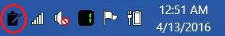

Start Using ClipJ
About
The purpose of ClipJ is to maintain a history of clipboard activity
so it's easy to go back to a previous clipboard item. This is a
Windows GUI application that runs in the Windows system tray. Left-click
on the ClipJ icon in the Windows system tray to display a history of
clipboard items. Double-click the ClipJ icon in the Windows system tray
for special functionality which copies to the clipboard any value
you put in the %CLIPJ%/data/clipj-double-click.xml file.
Screenshots
ClipJ in the system tray

ClipJ showing clipboard history